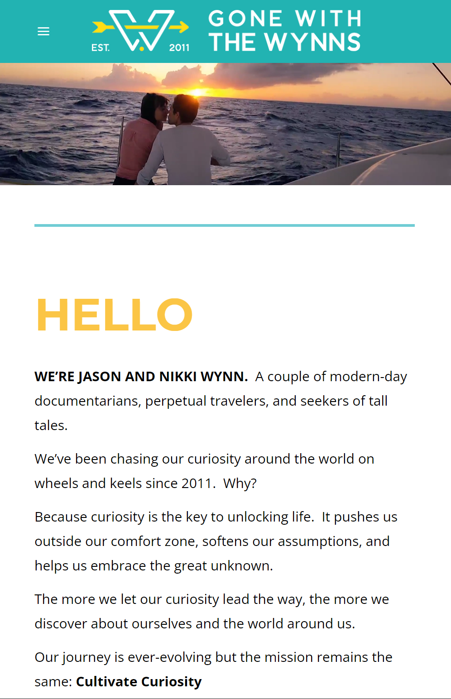
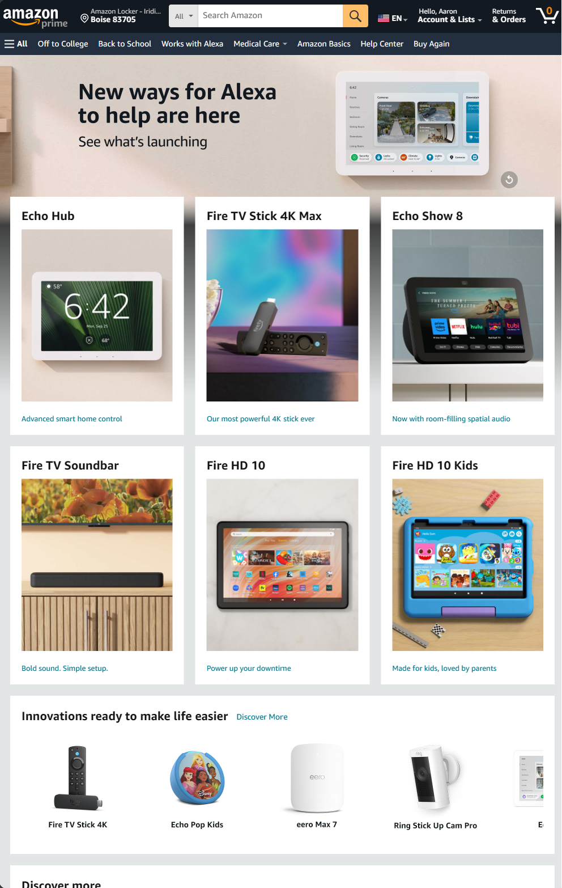
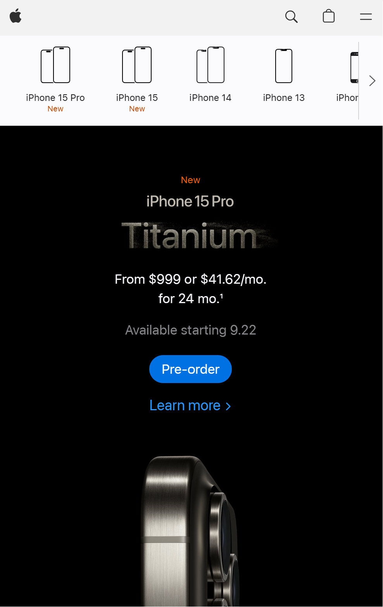

Contrast
Gone With The Wynns
gonewiththewynns.com Contrast is critical for accessibility and readability. It's also valuable in drawing attention to key elements for the reader. Gone with the Wynns website does a fantastic job of clean layout with simple contrasting colors that make it easy to read and draws attention to features and elements. Off the screen the theme and contrast rules continue. It's easy to follow and your eye is naturally drawn to each major section. In the shown image, the "HELLO" instantly draws your eyes and pulls you in to read more. The colors are pleasant and easy and not distracting.
Rule of Thirds
Amazon
amazon.com Rule of thirds is used to create a blance with the images and elements on the page. The rule is to form a grid pattern of intersections (two horizontal and two vertical creating 9 even boxes in a grid pattern). You then place an image or text of focus at the intersections of the grid or within one of the 9 grid boxes. In the screenshot for amazon.com, you can see they focus all their content using this rule. For example, the rotating featured product - the Product Text ("New ways for Alexa to help are here") lands perfectly on the 1st grid intersection in row 1 and the Product Image (image of Amaxons Echo Hub) lands perfectly on the 2nd grid intersection. Additionally, each of the products in the next two rows land within grid boxes.
White Space
Apple
apple.com/iphone Whitespace is very important to any content whether it be images, text documents, or websites. Without whitespace, it can feel cluttered and confusing and frustrating to view or read. Whitespace also helps draw attention to the main points you want the user to see and caters to a short attention span and peoples natural tendency to skim and move on. Apples webpages do a great job of utilizing whitespace to draw focus to the elements that matter. No extra clutter or noise to distract. Your eyes are naturally drawn to the image of the phone, then it's simple to see the contrasted subtext that gets to the point making it very easy to navigate.